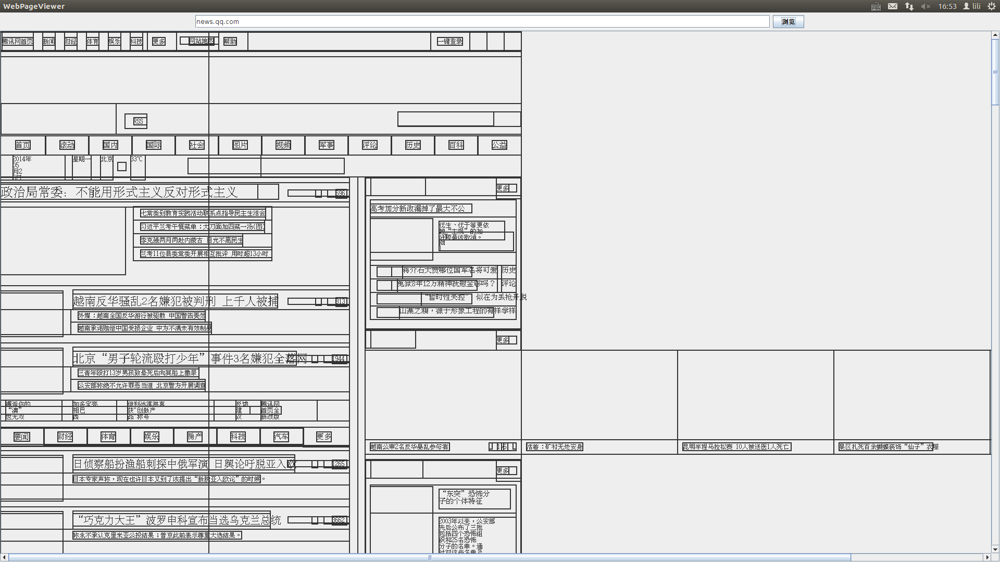

VDOM是什么?
VDOM使用Phantomjs和GohstDriver生成带视觉信息的DOM树，可以作为网页内容抽取的基础工具
VDOM的输出是什么？
输出经过浏览器渲染过的DOM树（能处理JavaScript）
DOM树的结点包含位置和字体大小信息
安装
下载和解压最新的压缩包
下载最新的Phantomjs并加压到vdom的根目录下（压缩包里附带了1.9.7 linux-64bit，请根据您的操作系统下载合适的版本）
mvn clean compile assembly:single
运行
java -jar target/vdom-1.0-jar-with-dependencies.jar
效果图：
